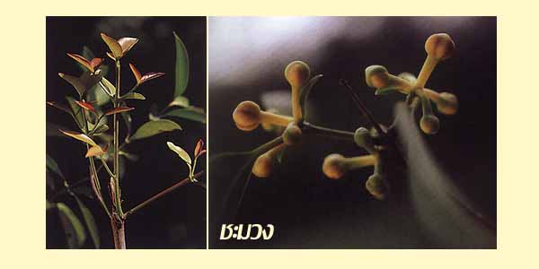

|
ECONOMICALLY
IMPORTANT PLANTS OF INDIA |
| Under-utilized Food and Fodder species and their wild relatives | Contributed by Ms.M.L Annapurna And Dr. Dhanapal, UAS, Bangalore |
Garcinia cowa

Availability :
Status :
DIAGNOSTIC
FEATURES
A tall or medium-sized evergreen dioecious tree with short
drooping branches often reaching the ground; leaves broadly lanceolate, acute,
thick and shining; flowers axillary or terminal and clustered; fruits globose,
depressed, about 2 inches in diameter., yellow or reddish with 6-8 grooves.
Male flowers are smaller slenderly pedicelled in dense terminal
clustres, the female flowers are 13 mm diam, pedicelled, solitary, or by 3-5 at
the end of the branchlets; sepals concave or oval, 4-6 mm long; petals in males
about so long as a sepals, in the females aomewhat longer ang larger; males
anthers numerus, four cornered, oblong, 4 celled, on very short filaments
crowded on a 4 cornered fleshy staminal mass; ovary rudiment minute.; females
staminodes forming 5 or 10 connate filaments ending into a gland and forming an
interrupted ring around the ovary; stigma stellately and densely 6-8 lobed, the
lobes crenate. Berry the size of a lime, 6-8 lobed not truely torulose, dull red
somewhat depressed at the apex and here bearing a small sessile deeply 6-8 cleft
stigma, the mesocarp reddish yellow.
Breeding System :
Phenology :
The tree flowers during January-March and fruits ripen in May-June.
Pollinators:
Seed Biology :
Parts used:
Fruits,Bark.
1. Fruits are made into Jam or Preserve.
2. Sun-dried slices of the fruit are used in dysentery.
1. Garcinia cowa, 2000, Kirtikar and Basu's illustrated (Indian) medicinal plants; Their usage in Ayurveda and Unani medicines, Third revised & enlaged edition, Vol.2.pp.365-366.
2.The wealth of India, A Dictionary of Indian Raw Materials and Industrial Products, Vol. I. A-By, Publications and Information Directorate, CSIR, New Delhi, India, 1948.pp. 100.